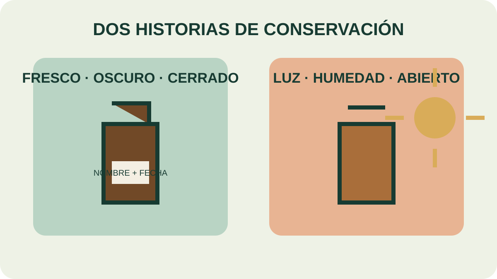

Módulo 22 · 20 minutos
Calidad, adulteración y conservación
Al terminar, vas a poder evaluar cómo se conserva un aceite y detectar prácticas que lo degradan.
El frasco también forma parte del producto
Dos aceites pueden salir iguales del proceso y llegar distintos a la mesa de formulación. Uno pasó meses cerrado, fresco, oscuro e identificado. El otro quedó junto a una ventana, con el gotero abierto y sin fecha. La diferencia no apareció en la planta: apareció en el cuidado del proceso.
Calidad antes del resultado final
La calidad es el conjunto de cualidades que permiten categorizar un producto. En un mercado competitivo exige controlar tanto el resultado como los costos. El cambio importante consiste en trabajar sobre los procesos en lugar de esperar al producto terminado para descubrir un problema.
El empieza en la materia prima, continúa en la extracción y alcanza el almacenamiento. Un aceite no queda protegido por haber sido bueno el día en que se obtuvo.
El enemigo silencioso
Los aceites se oxidan y alteran con facilidad; no poseen antioxidante natural. Son volátiles, muy concentrados, difíciles de dosificar y no se dispersan fácilmente, especialmente en productos secos. Bien almacenados, en cambio, conservan estabilidad y correspondencia con su materia prima.
La se reduce manteniendo el frasco en un lugar fresco, oscuro y apartado del sol. El cuarto de baño no es apropiado por su humedad; una despensa fresca resulta más adecuada.
Cerrar, dosificar, identificar
El envase debe ser hermético y disponer de un cuentagotas que facilite la dosificación y limite la entrada de cuerpos extraños. No conviene que el gotero sea de goma, porque el aceite puede deteriorarlo. Tampoco se deja el frasco abierto: la fracción volátil escapa.
No se reutilizan frascos usados y se identifica cada recipiente con nombre y fecha de extracción. Esa permite saber qué contiene el frasco y cuánto tiempo lleva almacenado.

Auditá los dos frascos
Localizá tres diferencias: ubicación, cierre y etiqueta. Para cada una, explicá qué dato se pierde o qué alteración se favorece. ¿Cuál corregirías primero?
Lo que dice la etiqueta y lo que contiene
La no siempre puede detectarse mirando el líquido. El perfil cromatográfico ayuda a comparar componentes; la etiqueta y el registro sostienen la identidad comercial.
También es necesario distinguir aceites esenciales de productos sintéticos. No son intercambiables por compartir un aroma aproximado. La composición, el proceso y las precauciones pertenecen a la identidad del producto.
Actividad · Auditoría de un estante
Imaginá tres frascos: uno abierto en el baño, otro al sol sin fecha y un tercero cerrado, oscuro y rotulado. Ordenalos de mayor a menor urgencia. Para los dos primeros escribí una corrección inmediata y un dato que debería registrarse.
Un buen aceite todavía no es una fórmula
Ahora sabemos reconocerlo y conservarlo. El siguiente paso no consiste en agregar más gotas, sino en elegir un vehículo y una proporción que transforme concentración en una preparación utilizable.
Guardá esta estación
Cuando puedas explicar la idea central con tus propias palabras, marcá el módulo como completado.